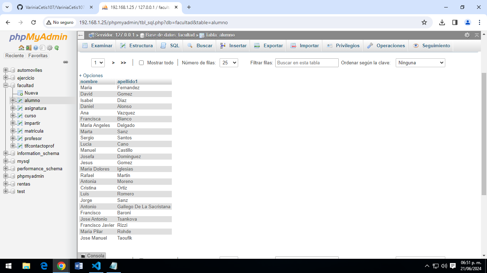
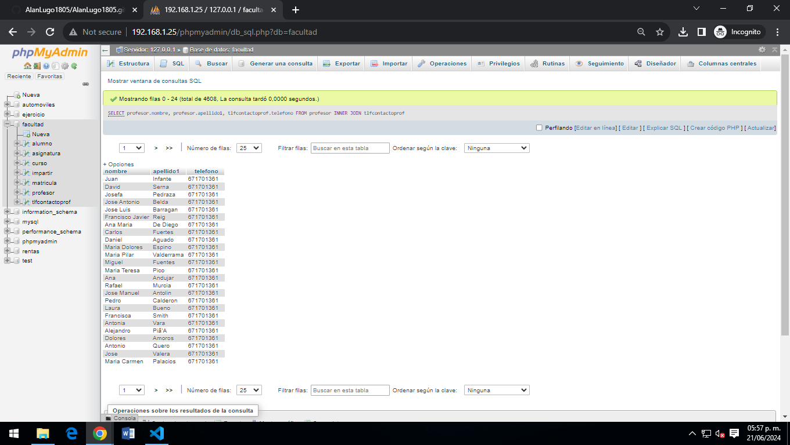
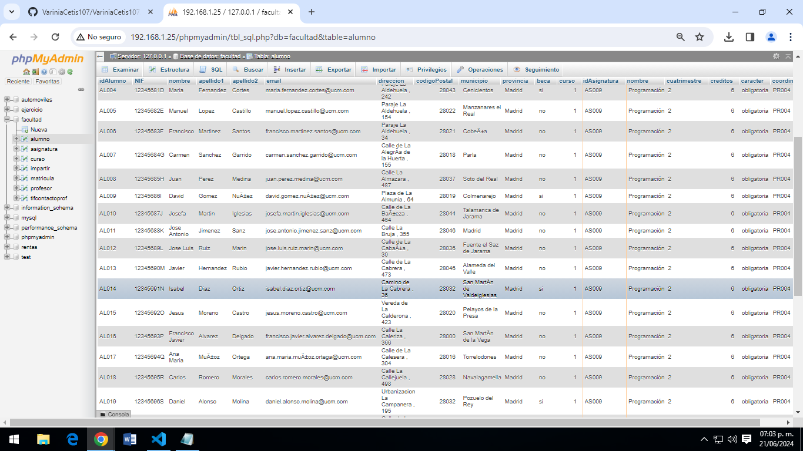
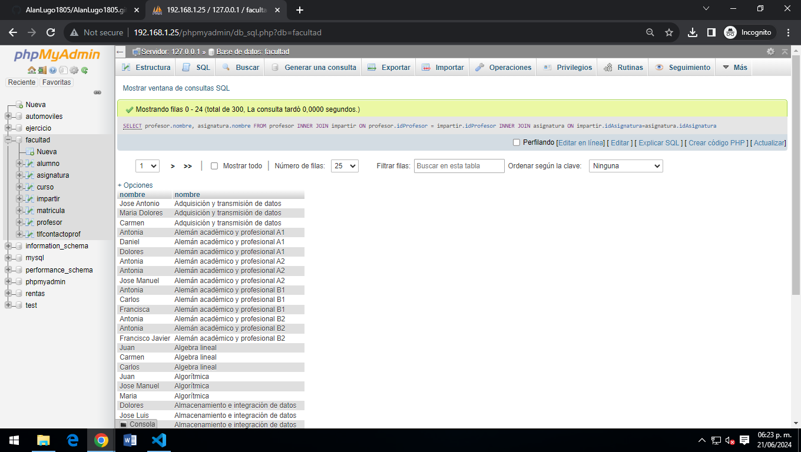

1-SELECT * FROM alumno;
Obtener el listado de todos los alumnos de la facultad

Obtener el listado de todos los alumnos de la facultad
Obtener el listado de curso y las asignaturas que tienen

Obtener el listado (nombre apellidos) de alumnos que tengan becas
Obtener el listado de proesores (nombre apellidos y su numero de contacto)
Obtener el listado de alumnos (todos los campos) que estan inscritos ala asignatura de programacion
Obtener el listado de alumnos (todos los campos) que estan inscritos ala asignatura de programacion
Mostrar la asignatura que tiene más alumnos en total

Mostrar a los alumnos que les da clase el profesor jose manuel

Mostrar los cursos, con sus asignaturas y que maestros las imparten

Mostrar todos los alumnos con asignatura, profesor y curso

Marco Antonio Larios Villaseñor